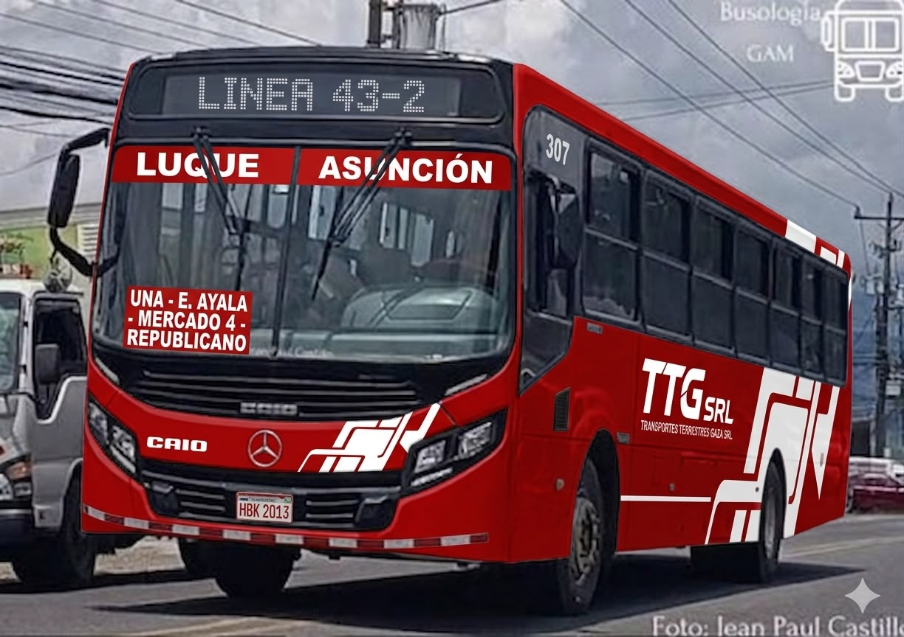
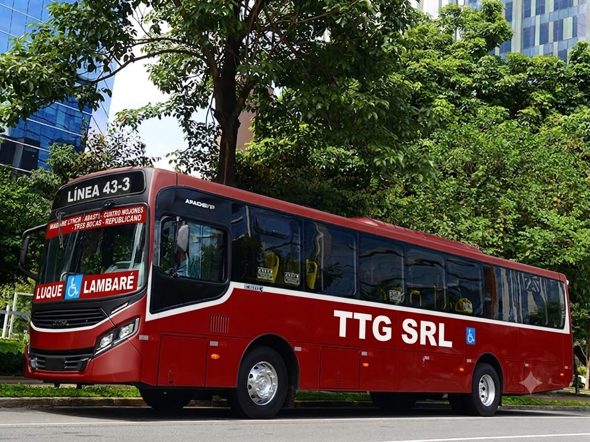
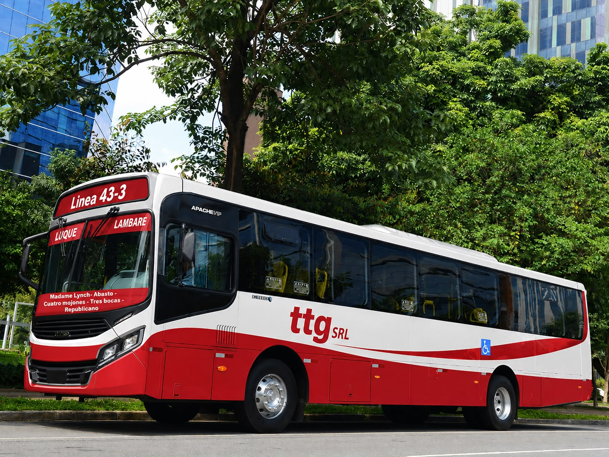

Excelencia en servicios
Somos una empresa dedicada al Transporte Público Paraguayo, ofreciendo seguridad, comodidad y puntualidad para todos nuestros pasajeros.
Transporte y Turismo Guaraní S.R.L es una empresa ubicada en la ciudad de Luque, dedicada al transporte público paraguayo con alta excelencia en servicios. Nuestro compromiso es brindar un viaje seguro, cómodo y eficiente.
Altos - San Bernardino - Tarumandy - Luque - Ruta Luque/San Lorenzo - Av. Mcal López - UNA - Clínicas - Identificaciones - Mercado 4 - Av. Félix Bogado.
Costa Sosa - Maka'i - Luque - Ruta Luque/San Lorenzo - San Lorenzo - UNA - Ruta 2 - Av. Eusebio Ayala - Mercado 4 - Av. Félix Bogado - Barrio Republicano.
Costa Sosa - Maka'i - Luque - Av. Gral Aquino - Tape Tuja - Av. Madame Lynch - Abasto - Calle Última - Av. Zavalas Cue - Tres Bocas - 4 Mojones - Av. Cacique Lambaré - Barrio Republicano.
Maramburé - Luque - Av. América - Aeropuerto.
Costa Sosa - 3 de Mayo - Primavera - Luque - Autopista - Aeropuerto - Mariano Roque Alonso - Transchaco - Botánico - IPS Central - Av. Médicos del Chaco - Av. Dr. Fernando de la Mora - Terminal - Av. Defensores del Chaco - Av. San Isidro - Av. Cacique Lambaré - Barrio Republicano.
Línea 43-1:
Primeras salidas (Altos): 03:00 - 03:20 - 03:40
Últimas salidas: 22:40 - 23:00
Líneas 43-2, 43-3, 43 Circular y 40-1:
Primeras salidas (Costa Sosa): 03:30 - 03:50
Últimas salidas: 22:30 - 23:00 - 23:15



Dirección: Coronel Martínez, Luque
Teléfono: (021) 543-243
WhatsApp: 0986549906
Correo: tttrosales2011@gmail.com
TikTok: buses.py
Facebook: Transporte y Turismo Guaraní S.R.L
Instagram: Transporte y Turismo Guaraní S.R.L